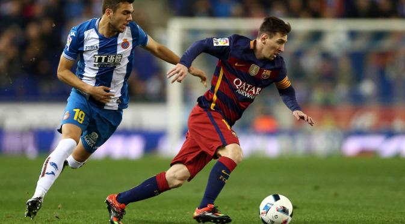
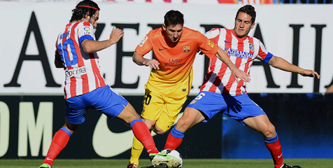

Gaya Bermain

Messi telah dibandingkan dengan rekan senegaranya Diego Maradona, karena gaya bermain dn perawakan mereka yang serupa, memberinya pusat gravitasi yang lebih rendah daripada kebanyakan pemain, sehingga dia lebih lincah dengan arah perubahan yang lebih cepat, membantu dia untuk menghindari tackle.Posturnya yang pendek dan kaki yang kuat memungkinkan dia untuk unggul dalam ledakan singkat akselerasi dan langkahnya yang cepat memungkinkan dia untuk tetap mengontrol bola saat menggiring bola dengan kecepatan. Mantan manajer FC Barcelona, Pep Guardiola, pernah menyatakan.: "Messi adalah satu-satunya pemain yang berjalan lebih cepat dengan bola daripada tanpa bola." Seperti Maradona, Messi adalah pemain dominan kaki kiri.[81] dengan bagian luar kaki kirinya, ia biasanya memulai dribbling berjalan, sementara ia menggunakan bagian dalam kakinya untuk menyelesaikan dan memberikan passing dan assist untuk rekan-rekan setimnya.
Messi sering melakukan dribbling individu dengan berlari mencetak gol, khususnya selama skema serangan balik, biasanya dimulai dari garis tengah, atau kanan lapangan, meskipun ia juga telah digambarkan sebagai pemain serbaguna, dengan visi yang baik, yang dikenal karena keakuratannya dan kombinasi permainan kreatif, khususnya dengan rekan tim Barcelona Xavi dan Iniesta Ia juga merupakan spesialis set piece yang akurat dan pengambil tendangan penalti. Sehubungan dengan kemampuan dribbling-nya, Maradona mengatakan Messi : "bola tetap merekat pada kakinya, saya telah melihat pemain besar dalam karier saya, tetapi saya belum pernah melihat orang dengan kontrol bola seperti Messi." Maradona telah menyatakan bahwa ia percaya Messi untuk saat ini menjadi pemain terbesar di dunia
Taktis , Messi memainkan pola menyerang bebas dan kadang-kadang berperan sebagai playmaker,dikenal karena finishingnya , kecepatan, dribbling,
keseimbangan, posisi, visi dan kemampuan memberikan umpan. Dia nyaman menyerang di kedua sayap atau melalui tengah.Ia memulai kariernya sebagai
pemain sayap kiri dan striker , namun kemudian pindah ke sayap kanan oleh mantan manajer Frank Rijkaard, yang menyadari bahwa dari posisi ini,
Messi bisa menembus pertahanan ke tengah lapangan lebih mudah, sehingga dia bisa melepaskan tembakan ke gawang dengan kaki kirinya, sedikit didominasi
crossing bola untuk rekan tim.Dia baru-baru ini telah bermain dalam peran false 9 di bawah asuhan Guardiola. Peran ini ditandai oleh kecenderungan
Messi untuk tampaknya akan bermain sebagai striker utama, atau sebagai striker tunggal, meskipun dalam permainan ia sering akan berlari kembali ke posisi
lebih mundur dengan bek lawan, menciptakan ruang bagi pemain sayap dan gelandang menyerang untuk membuat mereka berlari, sehingga memungkinkan dia untuk
menyediakan rekan setim passing atau memberikan ruang baginya untuk mulai berlari dribbling, mencetak gol atau membuat permainan menyerang dengan tim nasional
Argentina, Messi biasanya bermain di mana saja di posisi garis depan. Dia mulai sebagai striker atau pemain sayap, tetapi juga telah bermain di peran
yang lebih dalam, khususnya di bawah asuhan Maradona, lebih dari gelandang serang dan peran playmaker.
